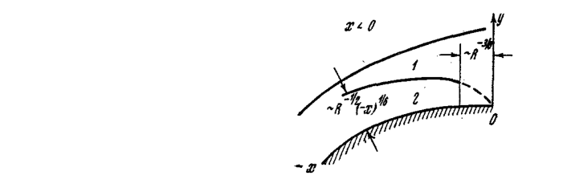
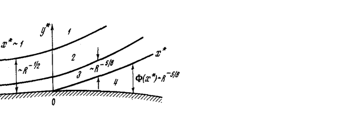
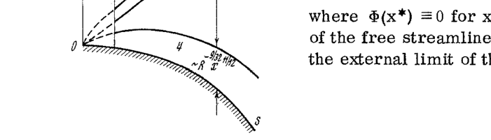

01中文摘要
研究不可压层流在光滑固体表面分离点邻域的流动。证明大 Reynolds 数下分离由局部强逆压梯度驱动：该梯度随 R^(1/8) 趋于无穷，作用区长度按 R^(−3/8) 趋于零；R→∞ 的极限状态可用理想流体自由流线射流理论的已知解描述。分析表明，分离不是由有限区域上预先给定的逆压梯度造成，而是边界层与外部无粘流自诱导的结果，机制与超声速激波-边界层干扰相似。
02阅读说明
理论分析（渐近分析）论文。材料为英译本第407–417页（PDF第1–11页），全文完整；正文公式文本层为重新排版/OCR，个别符号有损坏，已回读原PDF第407–409、412、414页（5页）核对关键式。Fig.1、Fig.5未列入抓图清单，本文只使用清单中的Fig.2–4；图注仅“Fig. n”，细节依正文区域说明。信息完整度较高：量级估计、各区展开、闭合关系与讨论齐全；数值常数仅给结果，未给计算细节。 文章类型：期刊
03一句话核心与三句话摘要
用自由流线射流解构造不可压层流分离的渐近理论：R^{1/8}量级压梯度在R^{-3/8}尺度内诱发分离。
- 已有边界层理论在给定正压梯度下于零摩擦点出现Goldstein型奇性，无法越过分离点；即便计及边界层与外流相互作用也未能消除[6]。 AI概括
- 作者假设外部无粘流在分离点邻域由带自由流线的射流解(1.1)–(1.3)描述，且k=ε(R)k0→0，用匹配渐近展开得到分离点前主层与内层、相互作用区及下游混合层的结构，并由量级平衡定出ε=R^{-1/16}，即Δx~R^{-3/8}、dp/dx~R^{1/8}、Δp~R^{-1/4}。 AI概括
- 结论是：不可压层流分离由局部大压梯度在极短区域内诱发，其机制与超声速边界层—激波干扰（自由相互作用）相似；渐近解只需给定分离区压力p∞一个常数，即可确定a0、k0与分离点位置。 原文明确
04核心内容清单
| 要点 | 类型 | 重要性 | 原文依据 | 属性 |
|---|---|---|---|---|
| 给定正压梯度时边界层在零摩擦点出现Goldstein型奇性、解不能越过分离点；若压梯度由分离点邻域自身诱导，则奇性可缺失、解可继续。 | 问题与缺口 | A | 第407页，引言 | 原文明确 |
| 假设外部无粘流由带自由流线的射流解(1.1)–(1.3)描述，且k=ε(R)k0、ε→0；k=0对应Brillouin–Villat条件，是R→∞的极限态（除分离点外）。 | 核心假设 | A | 第407–408页，式(1.1)–(1.4) | 原文明确 |
| 量级平衡给出相互作用区长度Δx~ε^6、压梯度dp/dx~ε^{-2}，并由位移—曲率关系定出ε=R^{-1/16}。 | 尺度律推导 | A | 第408–409页，式(1.9)–(1.14) | 原文明确 |
| 最终尺度：|x|~R^{-3/8}、y~R^{-5/8}、u~R^{-1/8}、Δp~R^{-1/4}、dp/dx~R^{1/8}、κ~R^{1/8}；压梯度与流线曲率无界增长如R^{1/8}，作用区趋于零如R^{-3/8}。 | 关键定量结果 | A | 第407页摘要；第409页式(1.15) | 原文明确 |
| 分离点前边界层分为主层与贴壁内层；内层标度为u~(−x)^{1/6}、η~Y(−x)^{-2/3}，解由(2.13)确定，其远场常数A1≈2.59、B1≈6.16。 | 双层结构 | A | 第410–411页，式(2.10)–(2.14) | 原文明确 |
| 相互作用区由x*=R^{3/8}x等变量归一，满足边界层方程(3.5)与壁面/分离流线条件(3.6)，其压力由θ1′的Hilbert积分(3.11)与位移函数F′(x*)（3.13）耦合闭合。 | 闭合问题 | A | 第412–414页，式(3.4)–(3.14) | 原文明确 |
| 相互作用区下游x>0存在混合子层，相似解指数α=2/3、β=1/3，方程(4.4)给出f0(−∞)=C=−0.9569；其后为分离区无粘回流及其贴壁边界层。 | 下游结构 | A | 第414–416页，式(4.1)–(4.16) | 原文明确 |
| 所有变量的估计与超声速自由相互作用问题的对应估计完全一致（文献[8]或[9]），说明两类分离同构。 | 类比结论 | B | 第409页，式(1.15)后 | 原文明确 |
| 机制上，分离不是有限长度上分布逆压梯度的结果，而是压力缓慢变化后在极小区域内突然增大所致，类似超声速激波—边界层干扰。 | 机制结论 | A | 第416页，第5节 | 原文明确 |
| 渐近解只需给定分离区压力p∞一个常数；完整数值解可确定a0、k0与分离点位置，从而把过去两个经验常数联系起来。 | 理论意义/可标定性 | A | 第416页，第5节 | 原文明确 |
| p∞须由物面尺度的全局流动确定；大R数下全局流很可能非定常，但局部解仍成立，时间只通过p∞(t)以参数形式进入。 | 适用范围 | B | 第416–417页，第5节 | 原文明确 |
05引言：研究问题与领域缺口
【原文明确】引言指出，给定正压梯度作用于有限长度物面时，边界层方程一般在摩擦为零处出现奇性，解不能越过分离点（[2–5]）；[6]试图通过计算边界层与外流相互作用消除奇性但未成功。另一方面，若压梯度不是预先给定、而是由分离点邻域内边界层自身诱导，则奇性可能不存在，解可越过分离点：Catherall–Mangler[7]以人为的位移厚度—压力关系首先演示了这一点；超声速情形已由匹配渐近展开得到合理解（[8–10]）。本文目标是：用理想流体射流理论的已知解描述分离点邻域外流，构造不可压层流分离的合理理论，并说明其机制与超声速分离相似（第407页）。【AI概括】研究问题是：在R→∞、外部极限满足Brillouin–Villat条件（除分离点外）的前提下，分离点邻域的局部流动结构、尺度律与闭合条件是什么。
06流动条件与几何构型
| 项目 | 数值/描述 | 依据 | 备注 |
|---|---|---|---|
| 流体/流动类型 | 不可压液体、二维、定常、层流 | 第407页摘要与第1节 | 全文不涉及压缩性、三维、湍流 |
| Reynolds数 | R=U∞L/ν→∞ | 第408页，式(1.4) | 渐近极限，无有限Re算例 |
| 参考长度 | 物面特征尺寸L | 第407页，式(1.1)后 | x、y均以L无量纲化 |
| 参考速度 | 自由流线上对应分离区压力p∞ρU∞²的速度U∞ | 第407页，式(1.1)后 | 速度分量以U∞无量纲化 |
| 参考压力 | 两倍动压2ρU∞²（twice the pressure head ρU∞²） | 第407页，式(1.1)后 | 与1979年论文按ρU∞²归一不同，引用时须注意 |
| 几何 | 二维光滑固体物面；x沿零流线从分离点x=0量起，y垂直物面；分离点上游x<0、下游x>0 | 第407页；Fig.1、Fig.2 | 零流线在x=0脱离物面 |
| 外部无粘极限 | p(x)=p∞−k(−x)^{1/2}+O(k²x)（x<0）；p=p∞+O[(−x)^β]，β>0（x>0）；自由流线曲率κ=(1/2)kx^{-1/2}+O(1) | 第407–408页，式(1.1)–(1.3) | k<0物理上不可能（自由流线穿物面）；k>0为本文采用 |
| 小参数假设 | k=ε(R)k0，k0>0、O(1)，ε(R)→0；最终ε=R^{-1/16} | 第408页式(1.4)；第409页式(1.14) | k→0使R→∞极限除分离点外处处满足Brillouin–Villat条件 |
| 壁面条件 | 物面与零流线上无滑移；子层外缘与主层匹配 | 第410页式(2.1)；第413页式(3.6) | x*>0时零流线与物面之间为分离区，u*=V*=0于Y*→−Φ(x*) |
| 压力条件 | 分离点邻域压梯度由边界层位移自诱导；下游x>0压力趋于常数p∞ | 第408页式(1.11)；第413页式(3.10)–(3.11) | 不是预先给定逆压梯度 |
| 初始/上游条件 | 上游主层剖面u00=(1/2)a0^{1/2}Y（Y→0）；a0、k0为正O(1)常数 | 第410页式(2.7)、(2.11)；第414页式(4.3) | a0、k0由完整数值解确定 |
| 全局参数 | p∞（分离区压力）为唯一需给定的常数 | 第416页，第5节 | 需在物面尺度全局问题中确定；其余常数由局部解给出 |
07核心现象与关键参数
| 参数 | 定义 | 数值 | 关系/说明 | 依据 |
|---|---|---|---|---|
| 小参数ε | k=ε(R)k0中的小参数，度量外部解偏离Brillouin–Villat条件的程度 | ε=R^{-1/16} | 由位移—曲率与压梯度同阶的条件(1.13)–(1.14)确定 | 第408–409页，式(1.4)、(1.14) |
| 相互作用区流向尺度 | 局部压力与惯性、粘性同阶的x范围 | Δx~R^{-3/8}（等价于Δx~ε^6） | x*=R^{3/8}x为O(1) | 第408–409页，式(1.10)、(1.15) |
| 压力梯度 | 分离点邻域dp/dx的量级 | dp/dx~R^{1/8}（~ε^{-2}） | 随R无界增长；决定分离的“突变”性质 | 第407页摘要；第409页式(1.15) |
| 压力增量 | 局部分离区压力扰动量级 | Δp~R^{-1/4}（~ε^4） | p*=R^{1/4}(p−p∞)=p1(x*) | 第409页式(1.15)；第412页式(3.4) |
| 子层法向尺度与速度 | 相互作用区粘性子层的y尺度与流向速度 | y~R^{-5/8}，u~R^{-1/8} | Y*=R^{5/8}y=R^{1/8}Y，u*=R^{1/8}u | 第409页式(1.15)；第412页式(3.4) |
| 流线曲率 | 外流零流线曲率κ=dδ/dx | κ~R^{1/8} | 与dp/dx同阶，是闭合位移—压力关系的关键 | 第408–409页，式(1.13)、(1.15) |
| 内层指数α、β | u~(−x)^α f1(η)，η~Y(−x)^{-β} | α=1/6，β=2/3 | 由(2.9)的粘性—惯性平衡与主层u0~a0(−x)^{1/2}Y匹配得到 | 第410页，式(2.9)–(2.11) |
| 内层远场常数A1、B1 | 式(2.14)中η→∞渐近的常数 | A1≈2.59，B1≈6.16 | 由(2.13)数值积分确定，进入(2.17)与(3.14) | 第411页，式(2.14)脚注 |
| 下游混合层常数C | 方程(4.4)的解在η→−∞的值f0(−∞) | C=−0.9569 | 决定分离区卷吸量与回流速度；数值引自[10] | 第414页，式(4.4)脚注 |
| 闭合函数F′(x*)与Φ(x*) | F′为子层外缘位移速度比，Φ为分离区/物面外形 | θ1′(x*,0)=F′(x*)+Φ′(x*)；F′(x*)=−(1/6)B1(k0/a0^{5/2})(−x*)^{-1/2}+…（x*→−∞） | 与外流Hilbert积分(3.11)共同闭合相互作用区 | 第413–414页，式(3.11)–(3.14) |
08方法与数据
【原文明确】第1节用量级估计：取外部解(1.1)–(1.3)，令k=ε(R)k0；由Δp~ε(−x)^{1/2}、u~Δu~ε^{1/2}(−x)^{1/4}、ΔY~u，以及粘性—惯性平衡(1.9)得Δx~ε^6、dp/dx~ε^{-2}；再由位移厚度变化Δδ~R^{-1/2}ΔY与流线曲率κ~d²δ/dx²~R^{-1/2}ε^{-10}，令κ与dp/dx同阶，定出ε=R^{-1/16}，从而得(1.15)的全部尺度。第2节把分离点前边界层写成von Mises形式(2.1)，作双层展开(2.2)–(2.4)，求出主项(2.6)–(2.7)与内层解(2.12)–(2.14)，并数值给出A1≈2.59、B1≈6.16。第3节引入相互作用区变量(3.4)、边界层方程(3.5)与边界条件(3.6)–(3.8)，用线性化Euler方程/薄翼型积分(3.10)–(3.11)及位移函数F′(x*)（3.13）闭合。第4节求x>0下游混合子层(4.1)–(4.4)与分离区/回流边界层。第5节讨论结果。【AI概括】方法为纯解析渐近展开加少量常微分方程数值积分；无实验、无全场CFD。
| 项目 | 内容 | 依据 | 备注 |
|---|---|---|---|
| 总体方法 | 匹配渐近展开（大R数极限），逐步量级平衡定标 | 第407–409页，第1节 | 非实验、非全场数值 |
| 分离点前边界层方程 | 二维定常不可压边界层方程，von Mises形式(2.1) | 第409页，式(2.1) | ψ=R^{-1/2}Ψ；x轴与零流线Ψ=0重合 |
| 外部无粘解 | 带自由流线的理想流体射流解(1.1)–(1.3)，对所有此类模型通用 | 第407–408页 | 文中未重新推导该外部解，只引用[11] |
| 相互作用区闭合 | 线性化Euler方程(3.10)与薄翼型理论积分(3.11)联系壁面压力梯度与位移斜率 | 第413页，式(3.10)–(3.11) | Φ(x*)在x*<0为0，x*>0描述分离流线形状 |
| 常微分方程数值积分 | (2.13)积分得A1≈2.59、B1≈6.16；(4.4)的解给出C=−0.9569（后者引自[10]） | 第411页式(2.14)脚注；第414页式(4.4)脚注 | 未给离散格式、步长或误差 |
| 下游匹配 | 把x>0混合子层(4.2)与相互作用区解(3.4)按x*→∞、Y*<0匹配；分离区无粘解与贴壁边界层(4.14)–(4.16)依次衔接 | 第414–416页，第4节 | 给出相互作用区下游的初值/渐近条件 |
09核心推导与公式
把分离点邻域外流取为自由流线射流解，其偏离Brillouin–Villat条件的程度k=εk0很小；用Δp、u、子层厚度与粘性—惯性平衡逐级定出相互作用区尺度，再由位移厚度引起的流线曲率必须与压梯度同阶，唯一确定ε=R^{-1/16}；随后按主层/内层/相互作用区/下游混合层分区展开并匹配，得到闭合的局部问题。
关键假设
- 二维、定常、不可压、层流，R=U∞L/ν→∞
- 光滑物面；零流线x轴从分离点x=0起算，x<0为上游、x>0为分离区
- 外部无粘极限为带自由流线的理想流体射流解，分离点邻域压力与流线曲率由(1.1)–(1.3)给出
- k=ε(R)k0，k0>0且O(1)，ε(R)→0；k=0对应Brillouin–Villat条件
- R→∞极限态除分离点外处处满足Brillouin–Villat条件，分离点处极限过程奇异
- 主层速度剖面在壁面附近线性u~Y，Y=R^{1/2}y；压梯度由边界层位移自诱导，而非预先给定
- 下游x>0压力趋于常数p∞
推导过程
所有带自由流线的理想流体模型在分离点邻域给出(1.1)：x<0时压力以(−x)^{1/2}变化，x>0时为高阶小量；压梯度(1.2)与流线曲率(1.3)在x→0时以(−x)^{-1/2}发散。k<0时自由流线穿过物面，物理上不可能；k>0会给出无限大正压梯度，传统上被认为导致更早分离；k=0即Brillouin–Villat条件。本文假设真实大R数流动在分离点邻域用k>0、k→0的(1.2)、(1.3)描述。
取k=ε(R)k0、ε→0，则分离点邻域压增量Δp~ε(−x)^{1/2}。主层中u为O(1)，速度变化Δu~(Δp)^{1/2}；贴壁处存在u~Δu~ε^{1/2}(−x)^{1/4}的子层。由于主层剖面在Brillouin–Villat极限下壁面附近u~Y（Y=R^{1/2}y），子层厚度ΔY~u~ε^{1/2}(−x)^{1/4}。
子层必须满足无滑移，故惯性、压梯度与粘性同阶：u∂u/∂x~∂p/∂x~∂²u/∂Y²。代入上面的估计得Δx~ε^6；在该区域内压梯度为dp/dx~ε(−x)^{-1/2}~ε(Δx)^{-1/2}~ε^{-2}。
该压梯度由边界层位移诱导；在Δx内边界层厚度总变化Δδ~R^{-1/2}ΔY~R^{-1/2}ε²，由此产生的流线曲率κ~d²δ/dx²~R^{-1/2}ε^{-10}。外势流理论要求零流线曲率与压梯度同阶，比较(1.11)与(1.13)得R^{-1/2}ε^{-10}~ε^{-2}，故ε=R^{-1/16}。
把ε=R^{-1/16}代回(1.8)、(1.11)、(1.13)，得相互作用区长度R^{-3/8}、子层厚度R^{-5/8}、速度R^{-1/8}、压增量R^{-1/4}、压梯度与曲率R^{1/8}。作者指出这与超声速自由相互作用问题的估计完全一致。
将边界层函数按(2.2)展开并代入von Mises方程，得逐阶方程(2.3)、(2.4)。首项描述k0=0的Brillouin–Villat流，壁面附近u00=a0Y^{1/2}+…；压梯度在−x→0时使(2.4)的粘性项相对惯性项可忽略，必须引入内层(2.9)，取u1~(−x)^αf1(η)、η~Y(−x)^{-β}。与u0~a0(−x)^{1/2}Y匹配得α=1/6、β=2/3。
内层函数满足(2.13)及其齐次边界条件；物理解的η→∞渐近为(2.14)，常数A1、B1由数值积分给出：A1≈2.59、B1≈6.16。该渐近用于把内层解接到主层二阶项(2.15)–(2.17)。
取x*=R^{3/8}x、Y*=R^{5/8}y=R^{1/8}Y、u*=R^{1/8}u、p*=R^{1/4}(p−p∞)，子层满足(3.5)；壁面x*<0无滑移，x*>0时零流线与物面间为分离区(3.6)。外流为线性化Euler方程(3.10)，压力梯度与位移斜率的关系由薄翼型积分(3.11)给出；θ1′(x*,0)=F′(x*)+Φ′(x*)，F′由子层外缘速度比(3.13)定义，上游渐近为(3.14)。(3.11)–(3.14)与(3.5)–(3.8)共同构成封闭问题。
x>0无压梯度，取u=x^{1/3}f0′(η)、v=x^{-1/3}[−(2/3)f0+(1/3)ηf0′]、η=Yx^{-1/3}，代入(4.1)得(4.4)；与上游剖面u00=(1/2)a0^{1/2}Y匹配要求f0′~(1/2)a0^{1/2}η（η→∞），壁面f0(0)=0，回流侧f0′→0。数值解给出f0(−∞)=C=−0.9569。分离区厚度由(1.3)的零流线曲率确定，卷吸量与回流速度平衡后得分离区压力与回流速度的标度；其贴壁边界层满足(4.15)。
适用边界：结论限于二维、定常、不可压、层流、R→∞、光滑物面；外部极限须为带自由流线的射流解且k→0；量级分析只保留首阶，未给高阶修正的完整解；内层常数A1、B1与下游C仅为数值值，未讨论精度；p∞本身未由理论确定，须求全局解；全局非定常性只以p∞(t)参数形式纳入；无实验或有限Re数值验证。
10结果：主要发现与关键证据
【原文明确】尺度律：当R→∞，压梯度与外部流线曲率无界增长如R^{1/8}，相互作用区长度趋于零如R^{-3/8}（第407、409页）；(1.15)给出|x|~R^{-3/8}、y~R^{-5/8}、u~R^{-1/8}、Δp~R^{-1/4}、dp/dx~R^{1/8}、κ~R^{1/8}。分离点前：主层速度剖面基本保持u00(Ψ)，内层厚度与速度满足(2.10)的α=1/6、β=2/3；内层解(2.13)在η→∞的渐近行为(2.14)含常数A1≈2.59、B1≈6.16（第410–411页）。相互作用区：x*=R^{3/8}x、Y*=R^{5/8}y=R^{1/8}Y、u*=R^{1/8}u、p*=R^{1/4}(p−p∞)，满足边界层方程(3.5)与壁面/分离流线条件(3.6)；外流压力由θ1′的Hilbert型积分(3.11)给出，且θ1′(x*,0)=F′(x*)+Φ′(x*)，F′(x*)由子层外缘速度比(3.13)定义，其上游渐近为(3.14)。下游：无压梯度时混合子层取α=2/3、β=1/3，f0满足(4.4)，f0(−∞)=C=−0.9569；分离区厚度由(1.3)的曲率关系确定，回流速度由卷吸量平衡得到（第414–416页）。
| 发现 | 证据 | 证据类型 | 强度 | 位置 | 属性 |
|---|---|---|---|---|---|
| 相互作用区尺度为Δx~R^{-3/8}，压梯度与流线曲率~R^{1/8}，压增量~R^{-1/4}，子层速度~R^{-1/8}、厚度~R^{-5/8}。 | 式(1.14)给出ε=R^{-1/16}；式(1.15)列出全部尺度；摘要明确“becomes infinite as R^{1/8}”“tends to zero as R^{-3/8}”。 | 量级推导 | 强 | 第407、409页，式(1.14)、(1.15) | 原文明确 |
| 分离点前边界层呈双层结构：主层保持原剖面，贴壁内层u~(−x)^{1/6}、η~Y(−x)^{-2/3}，由(2.13)描述。 | 由(2.9)与主层u0~a0(−x)^{1/2}Y匹配得α=1/6、β=2/3；内层解(2.12)–(2.14)。 | 渐近分析 | 强 | 第410–411页，式(2.9)–(2.14) | 原文明确 |
| 内层远场常数A1≈2.59、B1≈6.16，进入主层二阶项与相互作用区位移函数的渐近式。 | 式(2.14)及脚注给出数值；式(3.14)中出现B1。 | 数值积分结果 | 中 | 第411页，式(2.14)脚注；第414页式(3.14) | 原文明确 |
| 相互作用区问题闭合：子层方程(3.5)与壁面/分离流线条件(3.6)，加上外流Hilbert积分(3.11)和位移函数(3.13)，即可确定压力、分离区形状与流场。 | 式(3.10)–(3.14)，并声明“completely define the problem”（第414页）。 | 理论构造 | 强 | 第412–414页，式(3.4)–(3.14) | 原文明确 |
| 下游x>0存在混合子层，相似指数α=2/3、β=1/3，方程(4.4)的解给出f0(−∞)=C=−0.9569，并驱动无粘回流与贴壁边界层。 | 式(4.2)–(4.4)及脚注；式(4.14)–(4.16)给出回流边界层。 | 渐近分析+数值 | 中 | 第414–416页，式(4.1)–(4.16) | 原文明确 |
| 本文的尺度估计与超声速自由相互作用问题的对应估计“完全一致”，表明不可压层流分离与超声速激波—边界层干扰在局部结构上同构。 | 第409页式(1.15)后明确写“complete coincidence of the corresponding estimates (1.15) ... (see [8] or [9])”。 | 类比/文献对照 | 中 | 第409页，式(1.15)后 | 原文明确 |
| 渐近理论把过去描述曲面圆柱压力分布所需的两 个经验常数（分离点位置与分离区压力）缩减为一个：只需给定p∞，完整数值解即可定出a0、k0及分离点位置。 | 第416页第5节对Fig.5（引自[13]，R=1.06×10³）的讨论与“only becomes necessary to give one constant”的陈述。 | 理论推论 | 中 | 第416页，第5节 | 原文明确 |
| 全局流动在大R数下很可能非定常，但局部解只通过p∞(t)依赖时间，定常局部理论仍适用。 | 第416页：“depends on the time t as a parameter ... in the form p∞(t)”。 | 适用性讨论 | 弱 | 第416–417页，第5节 | 原文明确 |
11机制解释与论证链
【原文明确】分离并非由沿有限长度物面分布的逆压梯度逐渐造成，而是：外部无粘流在R→∞时趋近Brillouin–Villat条件（零流线无正压梯度），但这一极限在分离点处奇异；为使边界层位移与外流曲率自洽，压力必须在极短区域Δx~R^{-3/8}内以dp/dx~R^{1/8}的强度突增，边界层随即分离。该“缓慢变化后突然增大”的机制与超声速边界层—激波干扰的分离机制相似（第416页）。【AI推断】其逻辑相当于一个位移—压力反馈：子层增厚改变外流零流线曲率，曲率又要求相应压梯度，二者只在特定R标度下相容；但原文未使用“反馈”一词。
12讨论：结论、贡献与局限
【原文明确】作者强调：光滑壁面上的分离由大压梯度（dp/dx~R^{1/8}）在很小区域（Δx~R^{-3/8}）内作用所致；这种“压力缓慢变化后突然增长”的机制与超声速边界层—激波干扰的分离机制相似（第416页）。因此，把逆压梯度视为分布在有限物面长度上的传统图景“apparently does not hold in actuality”（第416页）。射流理论已含分离点邻域外流所需的全部局部信息；过去靠分离点位置与分离区压力两个实验常数就能很好地拟合曲面圆柱压力分布（Fig.5，引自[13]，R=1.06×10³），本文不仅解释其成功，还给出两常数间的关系：只需给定p∞一个常数，完整数值解即可定出a0、k0及分离点位置（第416页）。p∞本身需在物面尺度的“全局”问题上确定；大R数下全局流很可能非定常，但局部解仍有效，非定常性只使解通过p∞(t)依赖时间（第416页）。【AI推断】这把定常局部理论与非定常全局流动衔接起来，但p∞如何随时间演化、以及全局非定常性对局部解的反馈，本文未处理。
作者结论
【原文明确】在二维不可压层流、R→∞、光滑物面的条件下，若外部无粘极限为带自由流线的射流解且k=εk0→0，则分离点邻域存在自洽的局部渐近解：分离点前为“主层+内层”，相互作用区尺度R^{-3/8}，压梯度与流线曲率增至R^{1/8}，压扰动R^{-1/4}，速度R^{-1/8}；该区由边界层方程与外流Hilbert积分闭合；下游为混合子层与回流区。分离由局部大压梯度突然建立所致，机制与超声速边界层—激波干扰相似。理论上只需给定分离区压力p∞一个常数即可标定整个局部解，p∞须由物面尺度的全局流动确定；若全局流非定常，局部解以p∞(t)形式依赖时间。
主要贡献
- 首次用自由流线射流解作为分离点邻域外流，构造了不可压层流分离的合理渐近理论，避免给定压梯度下的Goldstein奇性。
- 给出完整的尺度律：Δx~R^{-3/8}、dp/dx~R^{1/8}、Δp~R^{-1/4}、u~R^{-1/8}、y~R^{-5/8}，并证明与超声速自由相互作用估计一致。
- 建立了由主层、内层、相互作用区（子层+外流Hilbert积分+位移函数）和下游混合层组成的闭合结构。
- 指出只需一个常数p∞即可确定a0、k0与分离点位置，从理论上解释了射流理论加两个经验常数能很好拟合实验压力分布的原因。
- 提出分离机制为局部压梯度“突增”，而非有限长度上分布的逆压梯度，并说明全局非定常性只通过p∞(t)进入局部解。
局限与未解决问题
【原文明确】二维、定常、不可压、层流、R→∞、光滑物面；外部极限须为带自由流线的理想流体射流解，k=εk0→0；只做首阶渐近，未给完整高阶修正；A1、B1、C仅为数值常数，未讨论精度；p∞未由理论确定，需解全局问题；全局非定常性只用p∞(t)参数化。【AI推断】不能用于有限Re、可压缩、三维、粗糙壁面或湍流分离；无实验/有限Re数值对照；对分离区内部结构只给标度，未给可测量的压力平台、回流速度或热流定量预测；对上游影响长度、非定常频率等SBLI常用量未涉及。
13对高速流动与工程的意义
【AI推断】本文是不可压自由相互作用理论的奠基工作之一：它把“分离由局部无粘—粘性相互作用自洽决定”的思想定量化，并给出与超声速SBLI自由相互作用相同的R标度，为后续三层理论、分离泡标度律与壁面压力平台预测提供了原型。对工程的可借鉴点是：分离区压力p∞是控制局部解的关键单参数，局部尺度由R^{-3/8}与R^{1/8}决定；但它不能直接回答具体构型的分离泡长度、激波串、热流或非定常频率，也不能外推到可压缩/湍流工况而不加修正。
14核心图件



15可引用原文素材
| 原文短句 | 可支持的观点 | 位置 | 使用建议 |
|---|---|---|---|
| “singularity ... may be lacking” | 压梯度由边界层自诱导时 Goldstein 奇性可缺失。 | 第407页，引言 | 说明研究动机与缺口 |
| “increase without bound” | 压梯度与流线曲率随R无界增长。 | 第409页，式(1.15)后 | 与摘要互相印证 |
| “similar ... supersonic flow” | 不可压分离机制与超声速分离相似。 | 第407页，引言 | 支持跨领域类比 |
| “matched asymptotic expansions” | 本文采用匹配渐近展开构造局部解。 | 第407页，引言 | 方法出处 |
| “time t as a parameter” | 全局非定常性只使局部解通过p∞(t)依赖时间。 | 第416页，第5节 | 连接定常局部理论与非定常全局流 |
| “completely define the problem” | 相互作用区关系式(3.11)–(3.14)完全确定问题。 | 第414页，第3节末 | 强调闭合的完整性 |
| “give one constant” | 渐近解只需给定p∞一个常数。 | 第416页，第5节 | 说明理论的可标定性优势 |
| “does not hold in actuality” | “逆压梯度分布于有限物面长度”的传统图景不成立。 | 第416页，第5节 | 批评传统分离图景 |
16最终核验
| 核验项 | 结论 |
|---|---|
| 仅基于全文 | 是。仅使用bundle文本、图注及为核对公式而读取的原PDF第407–409、412、414页；未引入外部知识或文献结论。 |
| A 级要点有依据 | 是。11条核心要点均有第407–417页的节、式(1.1)–(4.16)或Fig.2–4对应。 |
| 属性标注 | 是。three_sentence、core_points、findings逐条标注属性；imrad与机制段内亦分段标注。 |
| 覆盖范围 | 覆盖IMRaD四节、conditions（12项）、key_parameters（10项）、methods（6项）、derivation（9步）、mechanism、findings（8条）、conclusions、limits、significance、quotes（8条）、figures（3张）、verification。 |
| 无编造 | 未编造页码、图号、公式或数据；ε=R^{-1/16}由(1.12)–(1.14)与原文“k=R^{-1/16}k0”互相核对确定；OCR损坏处（式(2.13)的完整方程、式(4.6)、(4.9)–(4.10)的指数）未强行转写；A1、B1、C均直接取自原文脚注。 |
需回原文确认
- 式(2.13)的完整方程在文本层严重损坏，本文只转写了可靠的远场渐近(2.14)；需回原PDF第411页核对完整方程与边界条件。
- 式(1.15)中V与θ的标度在OCR中不清晰，本文只列|x|、y、u、Δp、dp/dx、κ六项；需回第409页确认其余项。
- 分离区厚度(4.6)与回流速度(4.9)–(4.10)的R、x指数在文本层残缺，本文未给出具体值，需回第415页核对。
- 内层常数A1≈2.59、B1≈6.16的数值精度与积分方法文中未提及。
- p∞需由全局解确定，但全局问题如何求解、是否唯一，文中未提及。
- Fig.1（k<0、k=0、k>0的自由流线形态）与Fig.5（曲面圆柱压力分布实验对比，引自[13]）未在抓图清单中，本文未引用其图像内容，仅按正文转述。
- 非定常全局流只以p∞(t)参数化，p∞(t)的时间尺度与局部准定常性条件文中未给出。
- 结论能否推广到可压缩流或湍流边界层，文中未提及，且无实验/有限Re验证。
17关联文献
依据标签、板块、构型与作者脉络自动关联，可据此追踪同一问题的前序与后续工作。
18引用格式
选择期刊风格后复制；出处保留原刊名。BibTeX 可直接用于 LaTeX。
引用格式
Sychev, V. V. 1972 Laminar separation. Fluid Dynamics 7 (3), 407–417.
PDF上传 PDF 并更新本页
本页缺少全文、摘要或图件时，可在浏览器本地补入 PDF。解析完全在本机完成，不上传网络；完成后会更新本页的 PDF 打开链接、原摘要、IMRaD 机器抽取、关键句与含图页面。复杂的公式语义与中文深度解读仍以原文和既有精读记录为准。
Zotero 笔记摘录
推导了光滑表面上的自诱导层流分离，给出了尺度关系，给出了相互作用区的压力积分方程，成为三层结构理论的核心工具